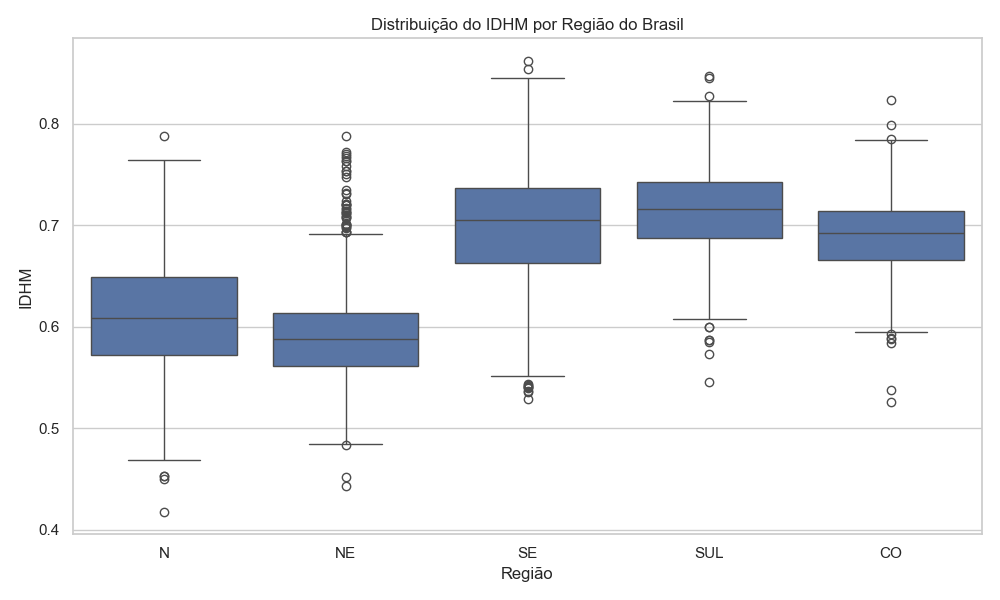
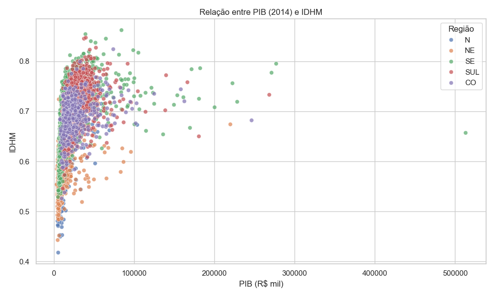
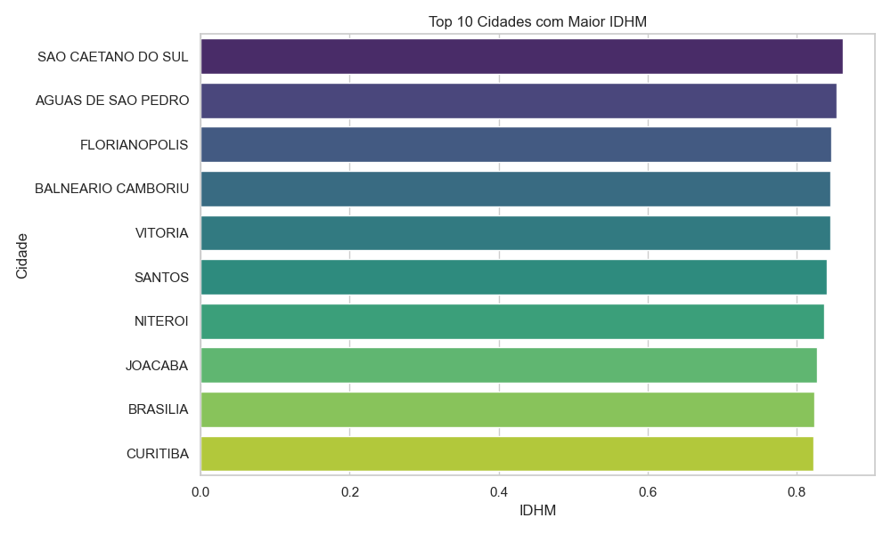
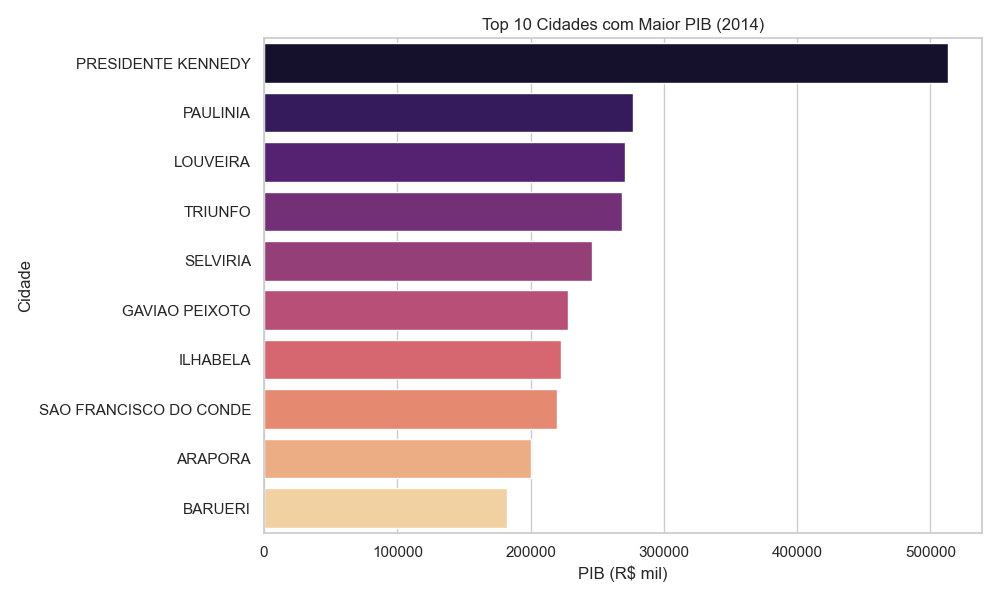

Usei dados públicos do IBGE para construir visualizações rápidas e acessíveis sobre características socioeconômicas, como IDHM, PIB e suas relações regionais.




Mostrar que mesmo com dados públicos e scripts simples é possível criar materiais visuais úteis para relatórios, projetos sociais, apresentações e políticas públicas.
← Voltar ao início